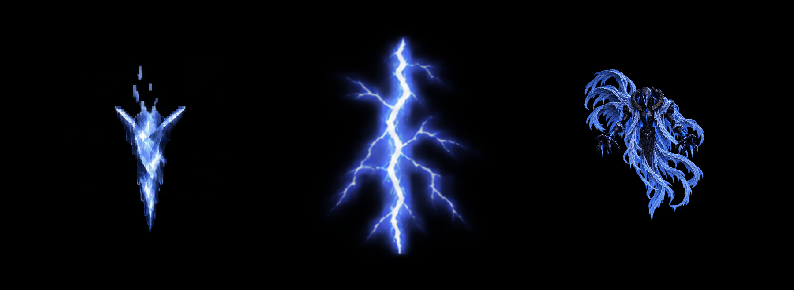

AirBoss 번개 · v01
24장의 서로 다른 그림 · 중심 피봇 · 흰 중심선과 가는 옆갈래가 방전한 뒤 청보라 잔광으로 사라집니다.
승인된 고드름새 번개AirBoss 참조

형성 3장 / 0.125초 → 방전 14장 / 0.583초 → 잔광·소멸 7장 / 0.292초
24FPS · 1초에 표시 종료 · 빈 끝 프레임 포함 전체 약 1.042초
Unity에서 실제 클립의 모든 키를 샘플링한 렌더입니다. 이 페이지는 반복 감상용이며, 제작한 Unity 클립은 한 번 재생합니다. 보스와 고드름은 화풍 비교용이며 실제 게임 배치 크기를 확정한 것이 아닙니다. 속도 선택은 미리보기에만 적용됩니다.
멀티 스프라이트애니메이션 클립제작 프롬프트제작 사양